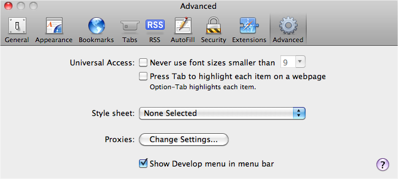
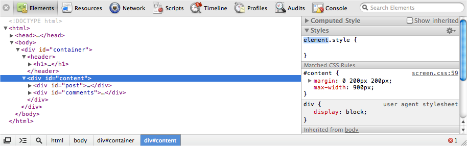
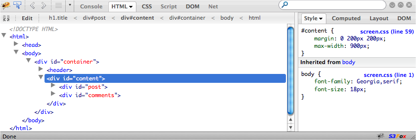

{% include JB/setup %}
{% raw %}
<div>
<div class="book" title="Inspectors"><div class="book"><div class="book"><div class="book"><h1 class="title1"><a id="I_sect19_d1e8911" class="calibre1"></a>Inspectors</h1></div></div></div><p class="calibre3"><a id="index-737H410UF3N" class="calibre1"></a><a id="I_indexterm9_d1e8920" class="calibre1"></a><a id="I_indexterm9_d1e8925" class="calibre1"></a>JavaScript development and debugging has come a long way
    from the <code class="literal">alert()</code> calls of the past.
    Most of the major browsers now include powerful element inspectors and
    debuggers, which simplifies and improves web development dramatically.
    We’re going to cover the two main inspectors next, but the general
    concepts should transfer over to any inspector you choose to use.</p><div class="book" title="Web Inspector"><div class="book"><div class="book"><div class="book"><h2 class="title3"><a id="id2930774" class="calibre12"></a>Web Inspector</h2></div></div></div><p class="calibre3">Web Inspector <a id="I_indexterm9_d1e8937" class="calibre1"></a>is available on both the Safari and Google Chrome
      browsers. The inspector’s interface differs slightly between the two
      browsers, but the functionality is fairly consistent.</p><p class="calibre3">In Safari,<a id="I_indexterm9_d1e8943" class="calibre1"></a> you have to enable it explicitly by checking the advanced
      preference, "Show Develop menu in menu bar," as shown in <a class="ulink" href="ch09s06.html#fig_9_7" title="Figure 9-7. Enabling Safari Inspector">Figure 9-7</a>.</p><div class="book"><div class="figure"><a id="fig_9_7" class="calibre1"></a><div class="book"><div class="book"><a id="I_mediaobject9_d1e8952" class="calibre1"></a></div></div><p class="title4">Figure 9-7. Enabling Safari Inspector</p></div></div><p class="calibre3">Chrome <a id="I_indexterm9_d1e8959" class="calibre1"></a>has a developer toolbar under the View toolbar, which you
      can use to enable the inspector. The alternative in both browsers is to
      right-click on an element and select “inspect”.</p><p class="calibre3">Web Inspector, shown in <a class="ulink" href="ch09s06.html#fig_9_8" title="Figure 9-8. Safari's Web Inspector lets you inspect the DOM">Figure 9-8</a>, is an
      incredibly useful tool, letting you inspect HTML elements, edit styles,
      debug JavaScript, and more. If it isn’t the case already, the inspector
      should be part of your day-to-day JavaScript development.</p><p class="calibre3">We’re going to cover more of its features in detail, but here’s a
      basic overview of Web Inspector’s components:</p><div class="book"><dl class="book"><dt class="calibre8"><span class="calibre1">Elements</span></dt><dd class="calibre9"><p class="calibre3">Inspect HTML elements, edit styles</p></dd><dt class="calibre8"><span class="calibre1">Resources</span></dt><dd class="calibre9"><p class="calibre3">Page resources and assets</p></dd><dt class="calibre8"><span class="calibre1">Network</span></dt><dd class="calibre9"><p class="calibre3">HTTP requests</p></dd><dt class="calibre8"><span class="calibre1">Scripts</span></dt><dd class="calibre9"><p class="calibre3">JavaScript files and debugger</p></dd><dt class="calibre8"><span class="calibre1">Timeline</span></dt><dd class="calibre9"><p class="calibre3">Detailed view of browser rendering</p></dd><dt class="calibre8"><span class="calibre1">Audits</span></dt><dd class="calibre9"><p class="calibre3">Code and memory auditor</p></dd><dt class="calibre8"><span class="calibre1">Console</span></dt><dd class="calibre9"><p class="calibre3">Execute JavaScript and see logging</p></dd></dl></div><div class="book"><div class="figure"><a id="fig_9_8" class="calibre1"></a><div class="book"><div class="book"><a id="I_mediaobject9_d1e9015" class="calibre1"></a></div></div><p class="title4">Figure 9-8. Safari's Web Inspector lets you inspect the DOM</p></div></div></div><div class="book" title="Firebug"><div class="book"><div class="book"><div class="book"><h2 class="title3"><a id="id2930960" class="calibre12"></a>Firebug</h2></div></div></div><p class="calibre3"><a id="I_indexterm9_d1e9024" class="calibre1"></a><a id="I_indexterm9_d1e9027" class="calibre1"></a><a id="I_indexterm9_d1e9032" class="calibre1"></a>Firefox doesn’t include a JavaScript inspector natively,
      but it has an excellent add-on to do the job: <a class="ulink" href="http://getfirebug.com/">Firebug</a>. See <a class="ulink" href="ch09s06.html#fig_9_9" title="Figure 9-9. Inspecting the DOM and CSS with FireBug">Figure 9-9</a>.</p><div class="book"><div class="figure"><a id="fig_9_9" class="calibre1"></a><div class="book"><div class="book"><a id="I_mediaobject9_d1e9046" class="calibre1"></a></div></div><p class="title4">Figure 9-9. Inspecting the DOM and CSS with FireBug</p></div></div><p class="calibre3">You’ll see that although the various components to Firebug have
      different names to their counterparts in Web Inspector, their
      functionality is very similar:</p><div class="book"><dl class="book"><dt class="calibre8"><span class="calibre1">Console</span></dt><dd class="calibre9"><p class="calibre3">Execute JavaScript and see logging</p></dd><dt class="calibre8"><span class="calibre1">HTML</span></dt><dd class="calibre9"><p class="calibre3">Inspect elements, edit styles</p></dd><dt class="calibre8"><span class="calibre1">CSS</span></dt><dd class="calibre9"><p class="calibre3">See and edit the page’s CSS</p></dd><dt class="calibre8"><span class="calibre1">Script</span></dt><dd class="calibre9"><p class="calibre3">JavaScript files and debugger</p></dd><dt class="calibre8"><span class="calibre1">DOM</span></dt><dd class="calibre9"><p class="calibre3">Global variable inspection</p></dd><dt class="calibre8"><span class="calibre1">Net</span></dt><dd class="calibre9"><p class="calibre3">HTTP requests</p></dd></dl></div><p class="calibre3">Firebug’s team has developed a Firefox-independent version, <a class="ulink" href="http://getfirebug.com/firebuglite">Firebug Lite</a><a id="I_indexterm9_d1e9094" class="calibre1"></a>. It has the vast majority of features from Firebug, as
      well as the same look and feel, and it’s compatible with all major
      browsers. Firebug Lite is especially useful for debugging Internet
      Explorer (it’s rather superior to IE’s built-in tools). Firebug Lite
      doesn’t require any installation, and it can be added to a web page
      using a simple script tag:</p><pre class="screen">&lt;script type="text/javascript" src="https://getfirebug.com/firebug-lite.js"&gt;&lt;/script&gt;</pre><p class="calibre3">Alternatively, you can install the bookmarklet from the <a class="ulink" href="http://getfirebug.com/firebuglite#Stable">Firebug Lite</a>
      website.</p></div></div></div>

{% endraw %}

